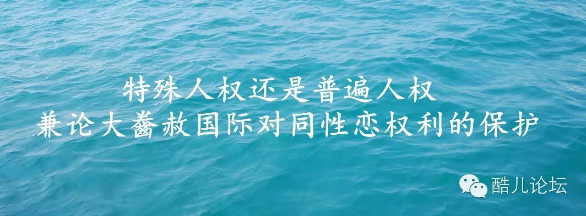

由于西方社会的历史文化传统和经济发展状况，同性恋（homosexuality）权利的保护在欧美人权界已成为一个热门话题，在中国，有关同性恋者权利保护尚未成为一个突出的社会问题。本文考察西方社会对同性恋权利保护的发展过程，希望通过对同性恋这一弱小群体权利的讨论，增进人们的人权意识。
一、同性恋者是自然人
维护同性恋者人权的第一个前提是同性恋者是不是人，是不是自然人（natural person），他们的精神是否正常？若对上述问题作否定回答，本文到此便可止笔。所幸的是，迄今为止，世界上大部分国家在医学和法律上对上述问题是作肯定回答的。 对同性恋的接受和认可经历了一个漫长的过程。在西方社会，对同性恋的认识经历了古代文明、罪行化与非刑事化、病理化和非病理化的过程。《圣经》有对同性恋者严惩的论述，特别是男同性恋者将被处以死刑。[1]到了古罗马时期，同性恋得到了宽容，但进入中世纪，同性恋被视为一种罪行而受到监禁、苦役甚至死刑。经过文艺复兴，17、18世纪的欧洲已不把同性恋视为一种罪行，但其被认为是一种非常态的状态，是精神病。20世纪中期，大量有关同性恋不是病态的研究结论问世。
1987年12月，在荷兰Urecht市召开的“同性恋疾病以外问题会议”上，与会的代表一致赞成同性恋合法化，[2]同性恋不是一种疾病，而是如同有人心脏在右，有人为左撇子一样。至此，同性恋在医学上属自然人的地位得到确立。在1992年联合国第44次“防止歧视和保护少数民族权利”会议上，同性恋问题首次被提出来，有与会者要求给予同性恋团体在联合国享有咨商地位。[3]一年之后，有3个同性恋组织获准参加1993年联合国日内瓦世界人权大会。1994年，联合国经社理事会（ECOSOC）讨论准备给予“国际同性恋组织”（the International Lesbian and Gay Association，简称ILGA）咨商地位，后因美国的质疑而被暂缓。[4] 伴随着医学上为同性恋者的正名，法律和法规上对同性恋的歧视也渐渐消失，同性恋者在法律地位上获得了与其他人一样的地位。考察当今世界各国的法律，在法律条文上规定同性恋为非法的国家日渐减少，在官方文件中对同性恋者歧视性的规定和语言也不多见。法律没有禁止的便是可以视之为正常，然而，法律上的平等并不意味着在文化道德价值观上不受歧视，在相当多的国家，特别是非西方国家，同性恋在文化和道德价值观上不被接受的现象依然很普遍，[5]因此，在实际上，同性恋者在就业、社会地位的获得等方面事实上仍处于不平等的状态。
即便是在性生活上，他们既处于一种羞辱的状态，同时也可能成为感染上爱滋病的受害者。[6]更有甚者，同性恋者在南美和南亚等一些深受西方文化影响的国家，他们常常是受虐待和酷刑的主要对象，是政治冲突的牺牲品。 从观念上改变同性恋的看法并非易事，但如同医学上给予同性恋支持一样，从人权法上给予同性恋保护则是可行的。目前著名的非政府人权组织大齤赦国际（Amnesty International）正致力于从国际人权法中寻找相关的规定，希望给予同性恋以人权法的支持和保护，或形成有关保护同性恋者的国际人权法。
二、同性恋权利的国际人权法渊源
当同性恋者在医学上被确认为自然人之后，接下来的问题是同性恋者之间的恋爱、婚姻和性生活是不是一种人权？同性恋者是否真正享有与其他人同样待遇的要求——如在就业上不应受到歧视等等。对上述问题作肯定回答的必要前提是在国际人权法中找到直接或间接支持同性恋权利的有关条文。 当同性恋者被认为是正常的人后，所有有关国际人权公约赋予每一个公民的权利同性恋者也应该同样享有。从具有一定法律效力的《世界人权宣言》到《公民权利和政治权利国际公约》及《经济、社会和文化国际公约》，宣言和公约上所禁止的行为和所赋予的权利从理论上是给包括视为自然人的同性恋者每一个公民的权利，其中的有关规定可以视为保护同性恋者的国际人权法的直接和间接来源。《世界人权宣言》宣称：“人人生而自由，在尊严和权利上一律平等。他们赋有理性和良心，并应以兄弟关系的精神对待。”“成年男女，不受种族、国籍或宗教的任何限制有权结婚和成立家庭。”“家庭是天然的和基本的社会单元，应受到社会和国家的保护。”“当男人和妇女达到适当的年龄后，他/她们有权利结婚，组成家庭。”[7]《世界人权宣言》的起草者在这里并没有规定两人结合组成家庭必须是同性。
《公民权利和政治权利国际公约》和《经济、社会和文化权利国际公约》规定，公民享有平等权、名誉权、隐私权、人格尊严权、婚姻自由、劳动权、劳动自由、自由选择职业权、雇佣机会平等权、享受适当工作条件权等权利。《禁止酷刑公约》第1款明确反对“基于任何理由的歧视行为。” 1980年，欧洲人权法院受理了分别来自爱尔兰等3个国家的申诉，法院最后判定，歧视男性成人同性恋是破坏了欧洲人权公约中关于保护个人权利的条款。[8]联合国人权委员会也曾于1998年敦促各国政府废除有关歧视同性恋的法律，要求禁止将基于性别倾向的歧视制度化或写入法律之中。1992年，世界卫生组织将同性恋从疾病分类中删去，[9]中国精神病协会也于2001年4月将同性恋从疾病分类中删除。[10] 但是，人权宣言和公约中的规定与现实状况存在着相当的差距，对某一特殊人权的保护仍需要特定的公约或条款。如215年前的法国《人权宣言》所宣称的人权实际上只有当时的法国男人享有，外国人、女人、奴隶、黑人和殖民地的居民都被排除在外；同样，《世界人权宣言》和人权两公约也只是在一定的条件下公民才真正享有部分权利而不是全部权利。并且，由于人权两公约其指导意义大于其执行和操作价值，因此，把人权两公约中的一些条款细化为专门的人权公约，使之具有可操作性成为了国际人权保护的发展方向，如《禁止酷刑公约》、《消除对妇女一切歧视形式公约》等专门人权公约的制订与实施，因此，有必要制订有关保护同性恋者的权利公约。
1999年8月23日，由世界性学会（World Association for Sexuality）组织、有30多个国家和地区参加的世界性学大会在中国香港举行。会议通过的《香港性权宣言》对性权利进行全面、具体规范阐释，《香港性权宣言》宣称性是每个人人格之不可分割的部分，性权是基本的、普世的人权，并规定了性自由权、性自治权、性完整权、性身体安全权、性私权、性公平权、性快乐权、性表达权、性自由结合权等11项性权利。[11]加之已形成的《巴伦西亚性权宣言》，关于性的权利保护开始朝国际人权公约的形式发展。但是，从性学会这一领域所作出的宣言变成为世界各国广泛接受、并通过联合国形成具有法律约束力的人权公约还有相当长的路要走。目前，同性恋权利未被普遍认同并得到保护的原因主要有四点：①世界上很多国家对同性恋群体持不同程度的歧视、排斥和厌恶态度。②同性恋组织制度化程度低。③许多国家政府对同性恋群体存在着误解，不支持他们/她们的行为。④同性恋者在组成家庭生儿育女问题上仍存在着难以解决的现实问题。
三、大齤国际对同性恋者人权的保护
大齤赦国际是目前国际人权领域唯一一个致力于同性恋人权保护的组织，以下介绍该组织在这方面的作为。1991年大齤赦国际发起了维护特别性特征者权利的运动，大齤赦国际发起该运动的目的既是为了维护同性恋者的权利，同时也想向世界表明，人权不仅仅是多数人的权利，同时还有那些被忽视或遗忘的极少部分人的权利，维护同性恋者运动极具象征意义。
大齤赦国际在其专门发行的《令人憎恨的犯罪沉默意味着共谋：基于性别特征的酷刑和虐待》小册子里将同性恋者称为具有特别性特征者，小册子对这一群体中是这样分类、定义的[12]：①有特别性取向（sexualorientation），指一个人对同性、异性或两者作出性兴奋反应的潜力，即同性恋、异性恋或两性恋者。②性别认同（genderidentity），即一个人对自己是男性还是女性的自我认识，其社会行为本应表现为一个男性或女性，但他或她却具有相反的心理特点。③性身份（sexual identity），指一个人区分男性和女性的能力，如男性刚强，女性阴柔，但他或她在其性身份判断出现错乱。④跨性别倾向（transgender），这些人的心理特征与其生物学特征相反，他或她希望通过荷尔蒙或手术的方式改变自己的性别。上述四种人英文简称为LGBT。
在大齤赦国际发起关注同性恋者的运动之前，上述四种人所受到的歧视和虐待从未被任何人权组织所关注。大齤赦国际认为，尽管他们的数量很少，但毕竟他们的人权受到了侵犯，他们是一个特别需要保护的特殊群体。上述四种人由于他们的性别特征而受到政府公职人员施行的酷刑或虐待，或在国家的默许下受到酷刑。如果认为同性恋者是低人一等，不是人（less than human），那他们就不会有人权，这是走向酷刑的第一步。[13]
大齤赦国际指出，由于不同的性别特征使某些人不被认为是一个公民，甚至被排除于家庭成员之外，而这种基于性别特征的歧视又往往由于国内政治的原因被有意制造、煽动而形成。许多国家政府鼓动反对同性恋情绪，利用这种情绪反对他们的对手，将同性恋者作为自己政策失误的替罪羊。或者，有的政府认为虐待同性恋者是“私事”，超出了司法管辖的范围，是同性恋者自己的行为所致。目前，至少有70个国家的法律明文规定禁止同性恋，在一些国家，LGBT被拒绝进入公共场所，他们没有结社、和平集会的自由。在监狱里，LGBT常常受到酷刑和虐待，他们被迫忍受暴力、压制、羞辱，得不到医疗保健及其他应有的待遇，社会环境和大众媒体形成了一个使LGBT受到歧视和有可能受到暴力侵犯的环境。
大齤赦国际认为，性特征是一个人身体和心理尊严的核心，每一个人有自由决定和表达自己性倾向的权利，维护LGBT的人权不仅仅是“西方”社会的问题，基于性特征的酷刑与基于种族和性别的歧视相似，关心LGBT事实上也是关心每一个人。[14]事实上，LGBT的权利并不是一种新的或特别的权利，无论一个人有什么样的性别特征，他们都应该享受《公民权利和政治权利公约》中所赋予的权利。
迄今为止，大齤赦国际将维护同性恋者权限包括在普遍人权的范围内在其内部依然是受到相当大的阻力的。如大齤赦国际执委会决定“准许将因同性恋而被囚禁者接纳为良心犯”时，不少分部对此决定表示异议，为此，执委会不得不又补充道：“考虑到不同地区的文化背景，大齤赦国际正在提出更为合适的办法。”[15]
在外界看来，大齤赦国际将特殊性别特征者与酷刑问题联系在一起，并竭力将此作为自己组织的一项主要权限，由此而导致一个难以避免的结局：大齤赦国际不可能成为一个可以得到广泛接受的组织。因为在人权的普遍性与特殊性之间，有时难以做到相互兼顾。大齤赦国际若要促进所有人权的进步，除非它放弃自己组织的一些特殊性，失去部分组织成员，放弃一些行动目标。近些年来的情况表明，维护同性恋者运动使大齤赦国际在吸引了一批同性恋群体的支持者的同时，也失去了另一群来自第三世界的支持者。
四、五点启示
人权标准是普遍的与特殊的标准相结合，特殊的标准渗透在普遍的标准之中，普遍的标准包含着特殊的人权标准，强调人权的普遍性而忽视特殊性或反之都不是对人权标准的完整理解。同性恋者的权利显然是一个特殊群体的人权，他们所要求的权利是一种特殊的人权，对这一特殊群体的特殊人权的否定便意味着对普遍人权的忽视或剥夺，因为作为个体存在的每一个人所应该享有的权利中，总会在不同程度上要求有一项或多项特殊的人权。 大齤赦国际维护同性恋者权利使它在普遍人权观与特殊人权观之间处于两难选择，这一矛盾实际上存在于许多国家的人权保护目标之中。大齤赦国际是一个以维护传统的、普遍人权价值观——公民权利和政治权利——的组织，而维护同性恋者权利是维护一种特殊的人权。大齤赦国际一直强调人权的普遍性，反对发展中国家对特殊人权的要求，而在同性恋问题上它却不能自圆其说。维护同性恋者的权利使大齤赦国际面临这样一个挑战：LGBT的人权是普遍性的人权还是特殊性的人权？大齤赦国际认为，LGBT的权利是一种普遍的人权，因为这些人的特殊生理和心理特征使得他/她们不能享受公民权利和政治权利。在此，大齤赦国际有牵强附会解释人权普遍性的嫌疑。事实上，人权标准的普遍性和特殊性都是相对而言，对某一群体是特殊的人权，在另一群体却成为了普遍的人权。如社会福利权利在人权保护资源极其有限的贫困国家显然是一种特殊的权利，而在西方福利国家则是一种普遍的权利。
大齤赦国际所发起的保护同性恋者权利运动最为明显地反映出文化上的差异导致人权观念上的分歧。由于文化的差异，大齤赦国际把同性恋者与酷刑和政治迫害联系在一起，把维护同性恋者权利包括在自己的行动目标之内在大齤赦国际内部引起了激烈的争论，许多来自非西方国家的成员对此疑惑不解。 来自非西方国家的组织成员和设立在非西方国家的大齤赦国际分部中的一些成员认为，关注同性恋威胁并破坏了自己组织内部的多元文化，因为西欧和北美的大齤赦国际成员在考虑这一问题时显然不同于亚、非和拉丁美洲国家的成员对这一问题的看法。欧美地区的成员认为关于“性”的问题多年前已属于大齤赦国际的权限范围，现在要做的只是将这一主题合法地列入大齤赦国际的行动目标而已；非欧美国家的组织成员则认为，同性恋或有特别性特征是一种非正常的行为，他们个人的行为与人权无关，大齤赦国际这样做将使自己不得不卷入应付其他性行为的危险之中。[16] 在同性恋权利保护问题上，南北方人权理论界都需要更大的宽容和谦让。南方国家的人权组织和机构不反对北方国家对同性恋者所予以的关注和保护，但北方国家对南方国家在人权观念态度和人权保护上的行动则甚为挑剔，如20世纪90年代中期发自亚洲国家的亚洲人权价值观却受到北方国家的大加斥责，而对于南方国家一直强调的经济和社会权利却被视为忽视公民权利和政治权利的借口。事实上，近10多年南方国家在人权保护上所取得的成就证明，南方国家在人权发展路径上的选择与一个国家特定的文化和历史背景以及社会现实紧密相关。
从国际人权保护机制的形成过程来看，联合国人权保护机制是在《世界人权宣言》的精神下形成了两个主要的人权公约，然后在两个主要人权公约的基础上再细化到多种专门性人权公约，多种专门性人权公约实际上是为了保护少数、特殊的群体，因为少数人和特殊群体最容易受到伤害。国际人权保护机制的形成过程是一个申明和保护普遍的、多数人的人权渐渐具体到强调和保护特殊的、少数的和弱势群体的权利的过程。 对多数人的人权与少数人的人权之间的关系的理解实际上与普遍的人权与特殊人权的关系相似，即“人”是由男人、妇女、儿童、少数民族、土著人、原住居民、残疾人、同性恋者等构成，这些“人”在享有多数人的人权的同时，后者还由于他们与生俱来、不可改变的特性，或由于历史沿袭而形成的与大多数人不一样的特征，他们的权利更应受到特殊的保护。保护少数人的权利达到保护所有人的人权，人权保护的另一半意义即在于此。
如大齤赦国际专注于对18种人权项目的保护，但它每年有限的资金不可能投入到所有的项目，其他人权组织也面临着同样的问题，如2003年7月1日生效的《国际刑事法院规约》也同样面临着资金困难的问题。 保护资源、历史文化和社会制度等客观条件的限制使得对所有人的人权保护往往是一种理想而不是现实，是一种应有人权而不是实有人权。于是，在具体的人权保护上便有了孰先孰后的问题，也就有了三代人权之间何者为先，何者放后的问题。大齤赦国际将维护同性恋者的权利列入自己组织的行动目标中，在西方发达国家可以理解并得以有效的实施，但在非西方且经济不发达的国家，其更大的意义则在于形成尊重同性恋者权利意识。
人权保护是一个渐进的过程，迄今为止，没有任何一个国家可以声称自己已经全部实现了《世界人权宣言》所宣布的各项人权，不同国家的社会、经济和历史文化状况千差万别，不同时期对人权的保护侧重点有所不同，因此，最大程度地实现《世界人权宣言》所申明的人权标准的路径也有所不同，但有一点是相同的，即具有尊重和保护所有人的权利的意识，每个人的权利的获得和保护才有了可能。